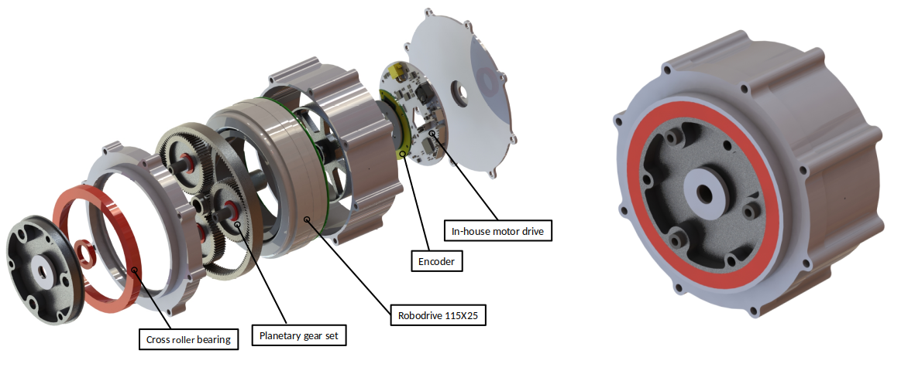
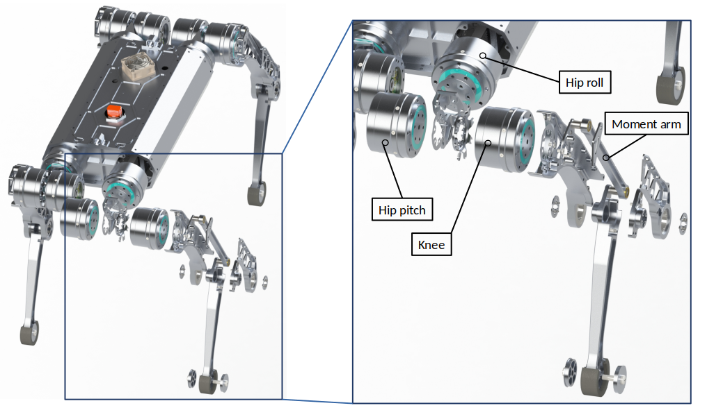

Research
Learning-based Control
Legged robots often face challenges due to their high degrees of freedom and the difficulty of accurately modeling complex environments. These factors discourage the development of robust and stable controllers. However, by leveraging reinforcement learning(RL) techniques, we have successfully developed locomotion controllers that enable the quadrupedal robots to adapt and traverse through challenging terrains such as rough, slippery, and deformable surfaces. This learning-based approach not only improves robustness and stability but also reduces dependency on accruate and computationally intensive models, making our controllers well-suited for practical applications in dynamic and unpredictable environments.
{kind=link}
Learning-based locomotion on various terrains
Through extensive experimentation, we have demonstrated the effectiveness of our RL-based locomotion controllers. The list of our work is shown below.
Suyoung Choi et al., Learning quadrupedal locomotion on deformable terrain. Sci. Robot. 8, eade2256(2023) paper1 video1
{kind=link}
Contact model of deformable terrains
Gwanghyeon Ji et al., “Concurrent Training of a Control Policy and a State Estimator for Dynamic and Robust Legged Locomotion,” in IEEE Robotics and Automation Letters, vol. 7, no. 2, pp. 4630-4637, April 2022 paper2 video2
{kind=link}
Concurrent training architeture
Blind locomotion through the natural environment characterized by steep slopes and scattered debris (ongoing) video_compiled video_hiking
Whole body control for pushing objects (ongoing)
Dynamic locomotion for traversing stepping stones (ongoing)
{kind=link}
Hardware Platform
Mechanical Design
Our Lab directly creates all the components to experiment with a controller to which the learning algorithm is applied.
{kind=link}
Raibo
Raibo, made by Railab, has hardware that can withstand shocks under various conditions and operate robustly regardless of the environment. We also design its own driving units, which are key components consisting of decelerators, motors, encoders, and motor drivers. With its own form factor, it plays a major role in achieving high efficiency during operation.
{kind=link}
Raibo driving units
{kind=link}
Raibo Leg Design
Through various simulations, we demonstrate that we can operate robustly and efficiently in various situations. The list of our work is shown below.
Hwangbo, et al. “Cable-driven actuation for highly dynamic robotic systems.” 2018 IEEE/RSJ International Conference on Intelligent Robots and Systems (IROS). IEEE, 2018. Paper3
Electrical Design
We are rigorously pursuing research in the electronics sector for pushing hardware utilization to the extreme. Our research extends from designing power circuit, crucial for handling inrush currents and regenerative braking during impacts, to high-power, high-bandwidth motor drivers. The circuit design, artwork, SMT, and testing are all performed in-house.
Left: circuit drawing, Right: component layout. (Blurred image for security)
Left: SMT assembly, Right: testing.
Leveraging our deep understanding of power electronics and robotic systems, we are not just enabling robots to utilize the extreme area of motor capabilities, but also contributing to bridging the sim-to-real gap. Furthermore, taking into account the characteristics of each electronics component, we can build high power and low noise motor driver in a small form factor and facilitate it into efficient locomotion.